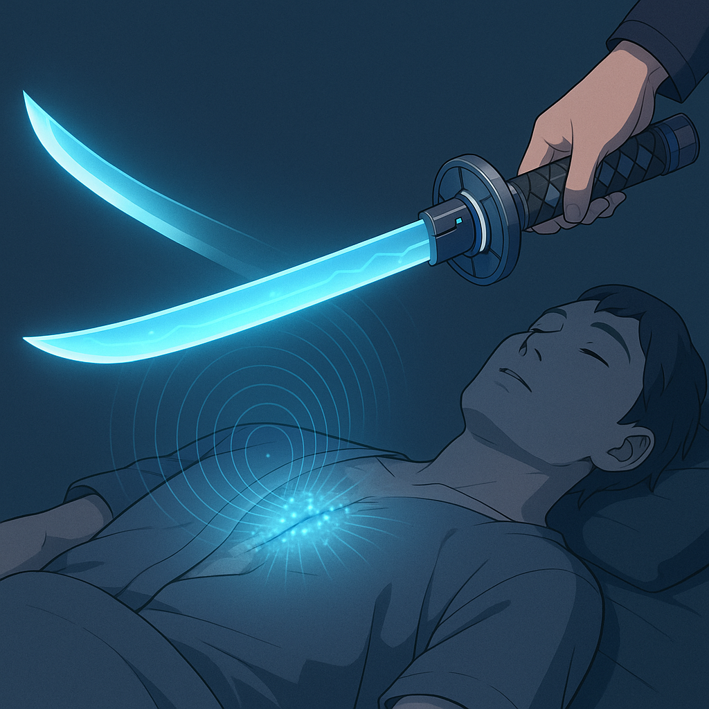
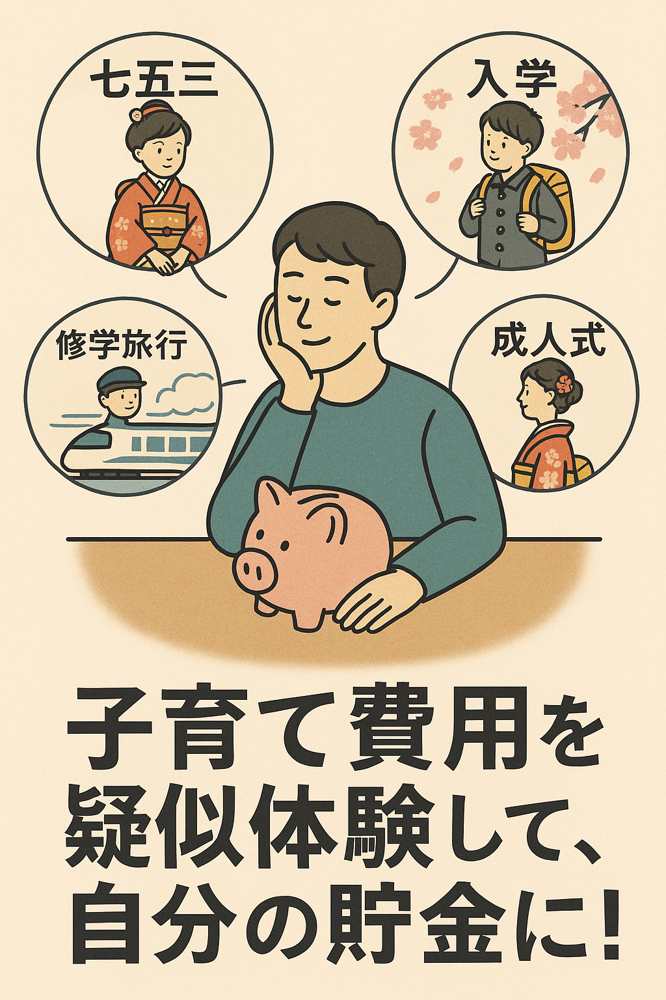

KIN 金 — 運転モード
ユーザー搭乗の手動/半自動操縦。都心部の短距離移動に最適化されたハンドリングと安全制御。
舞台は京都。古都のグリッド都市に、量子航路とAI交通制御を重ねる。地図の 発光する小さな家 をクリックすると、各エリアのデモやアニメーションが開きます。




ユーザー搭乗の手動/半自動操縦。都心部の短距離移動に最適化されたハンドリングと安全制御。

フリートの中枢AI。各機体の行動と電力配分を最適化し、都市ネットワークと同期。

無制限の前進航路を高速維持。視界内の直線ルートを自動抽出し、瞬時に加速。

垂直離陸・障害物越えのショートホップ。立体交差の多い市街地で機動性を発揮。

中距離の空路巡航。都市間連絡や物流支援に対応し、静音かつ高効率。


| 項目 | 内容 | 金額（JPY） |
|---|---|---|
| デザイン/アート | キービジュアル、車体レンダ、地図生成 | ¥300,000 |
| フロントエンド | GSAP/ScrollTrigger、ホットスポット/モーダル、レスポンシブ | ¥350,000 |
| 3D/モーション | 簡易3D視差・発光演出・トレイル | ¥200,000 |
| コピー/翻訳 | 日/中/英テキスト整備 | ¥80,000 |
| 検証/調整 | パフォーマンス最適化、アクセシビリティ | ¥70,000 |
| 合計 | ¥1,000,000 |
※ 構成・ページ数・追加演出により変動します。